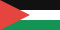

Palestine Children’s Relief Fund PCRF
Medical care for children and relief for families. Its donation page includes a Gaza Relief and Recovery fund.
Donate at pcrf.net
These organizations provide medical care and humanitarian aid. Choose one to donate through its official website.
Medical care for children and relief for families. Its donation page includes a Gaza Relief and Recovery fund.
Donate at pcrf.netMedical aid, nutrition, and mental health support for Palestinians in Gaza, the West Bank, and refugee communities in Lebanon.
Donate at map.org.ukFood, healthcare, education, and emergency assistance for Palestine refugees in Gaza and across the region.
Donate at donate.unrwa.org